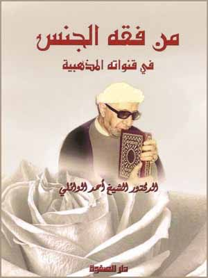

زواج المتعة
لكي ننهي الصراع
استمرار الصراع والتنابذ في هذا الموضوع لا يدل إلا على الجهل. فالعاقل يعرف أن “المتعة” هي طريقة من طرق الزواج كانت مشروعة في زمن الرسول صلى الله عليه وسلم وأيضاً في عهد الخليفة الأول ومُنعت في عهد الخليفة الثاني. ولكن من الصحابة من كان مصراً على أنها مباحة ومنهم من كان يعتقد بأنها حُرمت ونٌسخ حكمها. فأهل السنة والإباضية اليوم يحرمونها بناءً على روايات يرونها صحيحة تثبت التحريم والشيعة يرونها حلالاً لأن الروايات لم تثبت صحتها لديهم.
وَأُحِلَّ لَكُمْ مَا وَرَاءَ ذَلِكُمْ أَنْ تَبْتَغُوا بِأَمْوَالِكُمْ مُحْصِنِينَ غَيْرَ مُسَافِحِينَ فَمَا اسْتَمْتَعْتُمْ بِهِ مِنْهُنَّ فَآتُوهُنَّ أُجُورَهُنَّ فَرِيضَةً وَلَا جُنَاحَ عَلَيْكُمْ فِيمَا تَرَاضَيْتُمْ بِهِ مِنْ بَعْدِ الْفَرِيضَةِ إِنَّ اللَّهَ كَانَ عَلِيمًا حَكِيمًا
النساء - آية ٢٤
يَستَدِل من يرى أن زواج المتعة حلال بهذه الأية وأيضاً بعض من يرى بأن زواج المتعة حرام فأيضاً لا ينكر أن هذه الأية قد تكون عن زواج المتعة ولكن يرى أن الأية قد نُسخت وقد حُرم زواج المتعة بعد أن كان حلالاً.
ماهو زواج المتعة؟
هو زواج مثل الزواج المتعارف عليه ولكن محدود بمدة معينة وينتهي بإنتهاء المدة بدون طلاق. ولا إرث فيه ولا نفقة إلا إن تم الإشتراط على ذلك في العقد. ويسمى زواج مؤقت أو غير دائم أو منقطع.
يجب أن لا تكون المرأة متزوجة أو في فترة العدة وأن تكون مسلمة أو من أهل الكتاب.
الشروط
يجب تحديد المدة في العقد سواءً كانت ساعات أو أيام أو سنوات.
المدة
يجب تحديد المهر في العقد.
المهر
إن كانت بكراً فهنالك من يقول بالوجوب وهنالك من يقول بأن الأمر يعود لها إن كانت مستقلة في شؤون حياتها. أما الثيب فلا تحتاج لموافقة أحد.
موافقة الولي
الشيعة لا يشترطون وجود الشهود في الزواج بشكل عام سواء الدائم أو المنقطع (المتعة)
الشهود
الشيعة لا يشترطون الإشهار في الزواج بشكل عام سواء الدائم أو المنقطع (المتعة) ولكن يحبذون على ذلك حفظاً للحقوق ولعدم أن يتعرض الزوجان للشبهات
الإشهار
تقول المرأة: زوّجتك نفسي في المدة المعلومة على المهر المعلوم. ويقول الرجل: قبلت التزويج أو الزواج. أو العكس بأن يبدأ الرجل القول: تزوجتك في المدة المعلومة على المهر المعلوم. أو أن الموَكل هو من يقول: زوجتك موكلتي فلانة في المدة المعلومة على المهر المعلوم. أو مثل ذلك من الصيغ.
صيغة الزواج
ينسب الأطفال من هذا الزواج لوالدهم و والدتهم كالزواج الدائم. ولا يحق للزوجة الإجهاض.
الأطفال
لا يجب أن ينفق الزوج على زوجته ولكن يُكتفى بالمبلغ المحدد في العقد. سواء كان اسمه مهراً أو أجراً أو غير ذلك. أما بالنسبة للأطفال فيجب النفقة عليهم.
النفقة
لا يرث الزوج زوجته ولا العكس إلا إذا أشترطوا ذلك في العقد. ولكن الإبن الناتج عن هذا الزواج يرث كالولد الذي نتج عن الزواج الدائم.
الإرث
تعتد الزوجة بعد إنتهاء مدة الزواج أو في حالة موت زوجها. والعدة عبارة عن حيضتان أو ٤٥ يوم لمن لا تحيض أو الولادة إن كانت حاملاً.
العدة
لا تعتد المرأة إلا إذا حصل جماع. والبعض يقول حتى ولو كان من الدبر.
شرط العدة
إذا أراد الزوجين تجديد العقد بعد إنتهاء الفترة المتفق عليه فلهما ذلك بدون الحاجة لإكمال العدة. ويمكن تجديد العقد بعدد لا نهائي من المرات. وفي كل مرة يعاد الإتفاق على المهر و المدة.
تجديد العقد
إذا أنتهى العقد. بإمكان الزوجين العقد مرة أخرى بعقد دائم.
تحويله لزواج دائم
علماء الشيعة اليوم لا يحفزون على الزواج بهذا الشكل ولكن لا يحرمونه. و يرونه أنه حل للمضطرين لا ينبغى لغير المضطرين اللجوء إليه.
تذكر قبل أن تستهزء بشيعي مرة أخرى، أن هذا الزواج - كما نُقِلَ لنا - قد فعله الصحابة رضوان الله عليهم وأنه قد يكون من أولاد الصحابة من هم نتاج هذا النوع من الزواج (أولاد متعة).
تذكر أن الأمر لا يعدوا إختلافاً فقهياً. لهم أدلتهم التي سيسألهم الله عنها ولك أدلتك التي سيسألك الله عنها. ولن يضرك فعلهم ولن يضرهم إمتناعك عن هذا الزواج. ومن يؤمنون أنه حلال لا يستطيعون فعله إلا ضمن قوانين الدولة التي هم فيها فإن كانت تمنعه فلن يستطيعوا ذلك.
تذكر أن مجموعة من علماء السنة - والشيخ ابن باز منهم - يرون أن الزواج بنية الطلاق حلال. أي أن يتزوج رجل فتاة وفي نيته أنه سيطلقها بعد يومين مثلاً أو في نهاية البعثة إن كان مبتعث بدون أن يخبرها بنيته ولا يرونه خداعاً ولا غشاً.
تذكر أن أغلب علماء أهل السنة الذين يرون بجواز الزواج بنية الطلاق و أيضاً أغلب علماء الشيعة الذي يرون بجواز الزواج المؤقت لا يحفزون على هذه الأنواع من الزواجات ولكن يرونها حلاً للمضطرين.
للمزيد وللتأكد
أنصحكم بقراءة كتاب: من فقه الجنس في قنواته المذهبية للدكتور الشيخ أحمد الوائلي لمعرفة الحقيقة من أهلها. أو فقط بإمكانك البحث في قوقل عن مواقع علماء الشيعة والقراءة في قسم فتاوى زواج المتعة.

أنصحكم بقراءة كتاب المتعة: الزواج المؤقت عند الشيعة لأنه يدرس حالة المجتمع الإيراني في تطبيق زواج المتعة عملياً وليس فقط من الناحية التشريعية

تنبيه
كما تعرفون أنا لست عالماً ولا مرجعاً شيعياً ولا حتى منتسباً للمذهب الشيعي. فالمعلومات التي وضعتها هي خلاصة بحث وقراءات ومشاهدات لعلماء ومراجع الشيعة. وكما تعلمون أن المذهب الشيعي ينقسم لأقسام. فما ذكرته هو الأشهر والأعم وقد يختلف أحد المراجع في تفصيلة محددة.
يَا أَيُّهَا الَّذِينَ آمَنُوا كُونُوا قَوَّامِينَ لِلَّهِ شُهَدَاءَ بِالْقِسْطِ ۖ وَلَا يَجْرِمَنَّكُمْ شَنَآنُ قَوْمٍ عَلَىٰ أَلَّا تَعْدِلُوا ۚ اعْدِلُوا هُوَ أَقْرَبُ لِلتَّقْوَىٰ ۖ وَاتَّقُوا اللَّهَ ۚ إِنَّ اللَّهَ خَبِيرٌ بِمَا تَعْمَلُونَ
إذا أردت مناقشتي في الموضوع فتكرماً قم بكتابة ذلك عبر الرد على التغريدة أعلاه وإذا أعجبتك المقالة فأتمنى منك نشرها عبر عمل ريتويت للتغريدة أعلاه أو الضغط على الزر أدناه لنشر المقالة عبر الواتساب
الثلاثاء ٩ رمضان ١٤٤٠ هجري
برزبن - استراليا